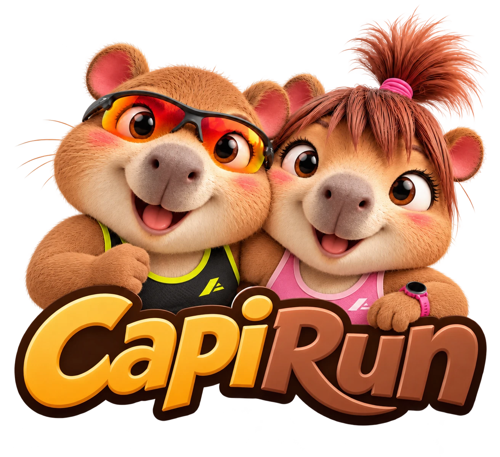
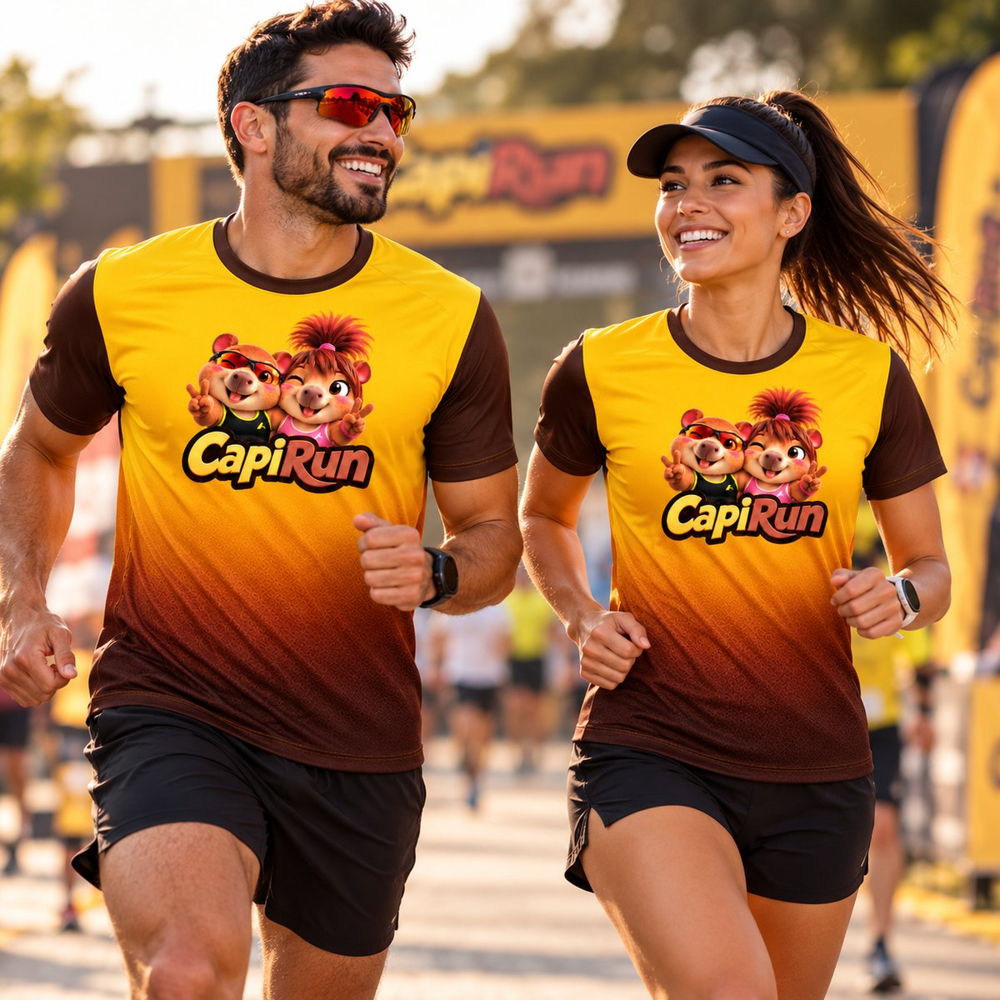
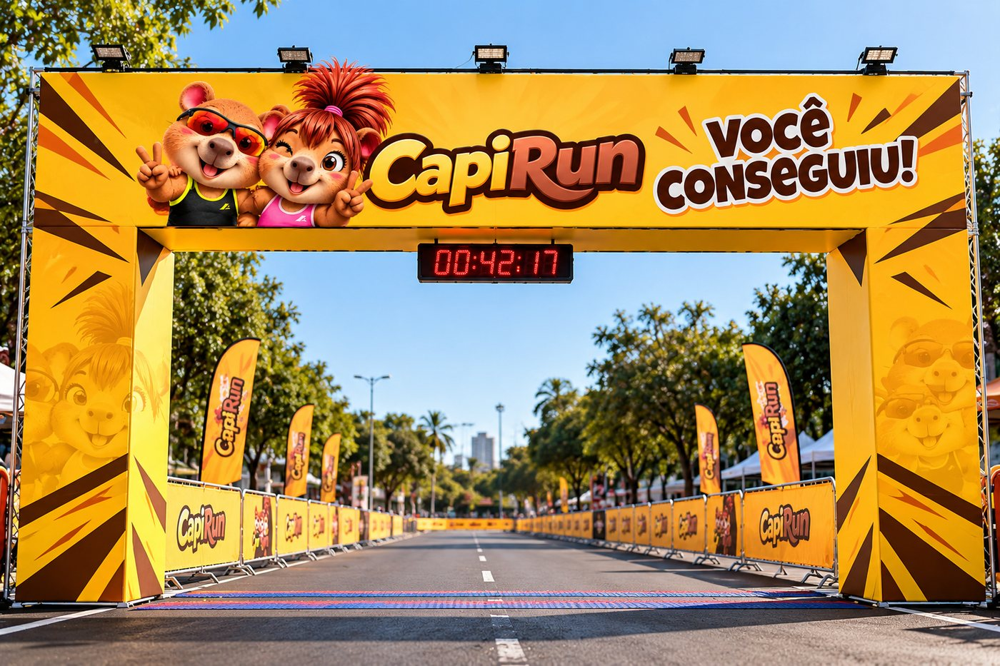
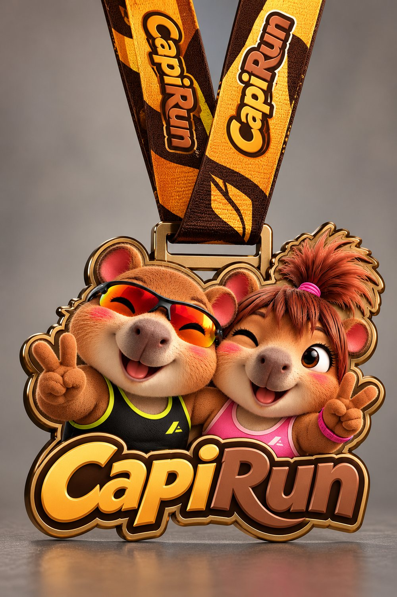
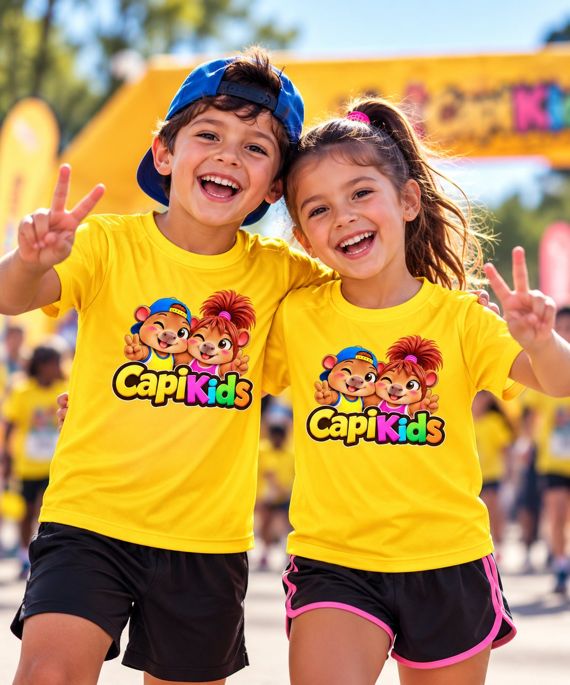
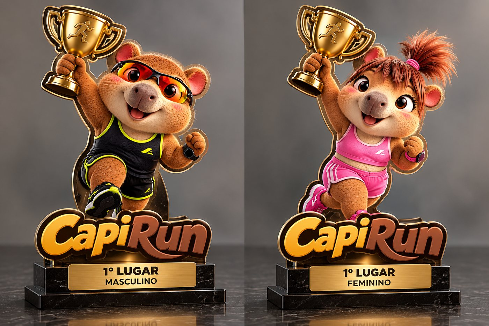

5KM
Para quem veio buscar o tempo, o pódio e o próprio limite.
MÍDIA KIT · 19.03.2027 · ANIVERSÁRIO DE RIO PRETO
A CapiRun é a corrida oficial do aniversário de 175 anos de Rio Preto. 3.000 corredores, famílias inteiras, música e festa, e as marcas que fizeram parte de um momento que não se repete.
Quero fazer parte dessa experiência
01 / O EVENTO
CADA PASSO CONTA. CADA ENCONTRO TAMBÉM.A CapiRun reúne o que move as pessoas: esporte, saúde, superação e a alegria de estar junto. É uma manhã para correr, caminhar, torcer e celebrar, lado a lado com atletas, famílias e toda a comunidade.
Corrida e caminhada
Pequenos passos, grandes conquistas
Para quem veio buscar o tempo, o pódio e o próprio limite.
Para viver o percurso no seu ritmo, ao lado de quem você ama.
100 vagas para a nova geração dar os primeiros passos no esporte, com diversão e medalha no peito.

02 / DO ESQUENTA À ÚLTIMA MÚSICA
A CORRIDA DURA MINUTOS. A EXPERIÊNCIA FICA PARA SEMPRE.A CapiRun começa muito antes da largada e termina muito depois da chegada. Sua marca acompanha cada momento.
Ativações pré-corrida, treinões, entrega de kits e ações pela cidade. A ansiedade cresce e a sua marca cresce junto.
O frio na barriga, a torcida no percurso, a hidratação, a locução e milhares de pessoas correndo na mesma direção.
A linha de chegada vira palco. As famílias ficam, celebram e vivem a marca de perto.

03 / A CHEGADA É SÓ O COMEÇO
CRUZOU A LINHA? AGORA COMEÇA A FESTA.Depois da prova, ninguém vai embora. Tem música, sabor e diversão para todas as idades, e um público feliz e com tempo para viver a sua marca.
A trilha sonora da comemoração.
Sabores para recarregar as energias.
Brinquedos e diversão para os pequenos.
É aqui que a sua marca deixa de ser vista e passa a ser vivida.
04 / UMA LARGADA, MUITAS HISTÓRIAS
O ATLETA E A FAMÍLIA LARGAM JUNTOS.Na CapiRun, quem treina há anos divide a rua com quem vai correr pela primeira vez. Um busca o recorde e o outro busca o momento. Os dois cruzam a mesma linha de chegada.
A adrenalina de disputar cada segundo.
Para ele, a medalha é a memória.
Sua marca fala com os dois, no mesmo dia e no mesmo lugar.
05 / QUEM CORRE COM A GENTE
PESSOAS REAIS. CONEXÕES REAIS.Esteja presente nos momentos que aproximam as pessoas.
Assessorias, grupos de corrida e quem tem o asfalto como rotina. Um público fiel, que lembra de quem esteve ao lado dele.
Pais, mães, avós e crianças vivendo juntos um dia de festa, seja correndo, caminhando ou torcendo.
Empresas que querem se conectar à comunidade e associar sua marca a hábitos saudáveis.
Moradores e visitantes da região reunidos pelo esporte e pela alegria de estar juntos.
06 / UMA DATA QUE NÃO SE REPETE
E TUDO ISSO NO DIA EM QUE RIO PRETO COMPLETA 175 ANOS.A CapiRun não acontece perto do aniversário. Ela acontece no dia 19 de março, a data exata em que São José do Rio Preto completa 175 anos. A experiência da corrida ganha um significado a mais: comemorar a cidade em movimento.
Existem muitas corridas no calendário. Mas só existe um aniversário de 175 anos.

07 / SUA MARCA EM MOVIMENTO
PRESENÇA QUE FAZ SENTIDO.Faça parte da experiência antes, durante e depois da corrida.
Sua marca em camisetas, backdrop, banners e materiais de divulgação, conforme a cota escolhida.
Divulgação nos canais da CapiRun, da abertura das inscrições ao pós-evento.
Estandes, ativações e distribuição de brindes antes da corrida e no festival pós-prova.
Associe sua marca ao esporte, à família, ao bem-estar e a um momento histórico da cidade.
Citações durante o evento e agradecimentos nas mídias pós-evento mantêm a sua marca presente nessa história.
08 / GALERIA
A CAPIRUN EM CADA MOMENTO.De estandes no percurso a ativações no festival, a sua marca aparece em cada etapa dessa experiência — e as imagens que a CapiRun já vive.


09 / COTAS DE PATROCÍNIO
ESCOLHA COMO FAZER PARTE.Três formas de colocar a sua marca na mesma direção desse movimento.
Presença em posições de destaque.
R$ 13.000
Conexão dentro e fora do percurso.
R$ 7.000
O primeiro passo para correr junto.
R$ 3.000
Converse com a organização para alinhar disponibilidade, formatos e detalhes de entrega.
10 / APOIO OFICIAL
Sua empresa também pode contribuir com produtos, serviços ou estrutura. Contribuições abaixo das cotas de patrocínio podem fazer parte do evento como apoio oficial, com visibilidade e reconhecimento.
Vamos construir essa parceriaA PRÓXIMA CONEXÃO PODE SER A SUA.
A largada, o abraço na chegada, a música, as crianças com medalha no peito e a cidade inteira celebrando. Coloque sua marca em movimento com a CapiRun 2027.
Fale com a organização